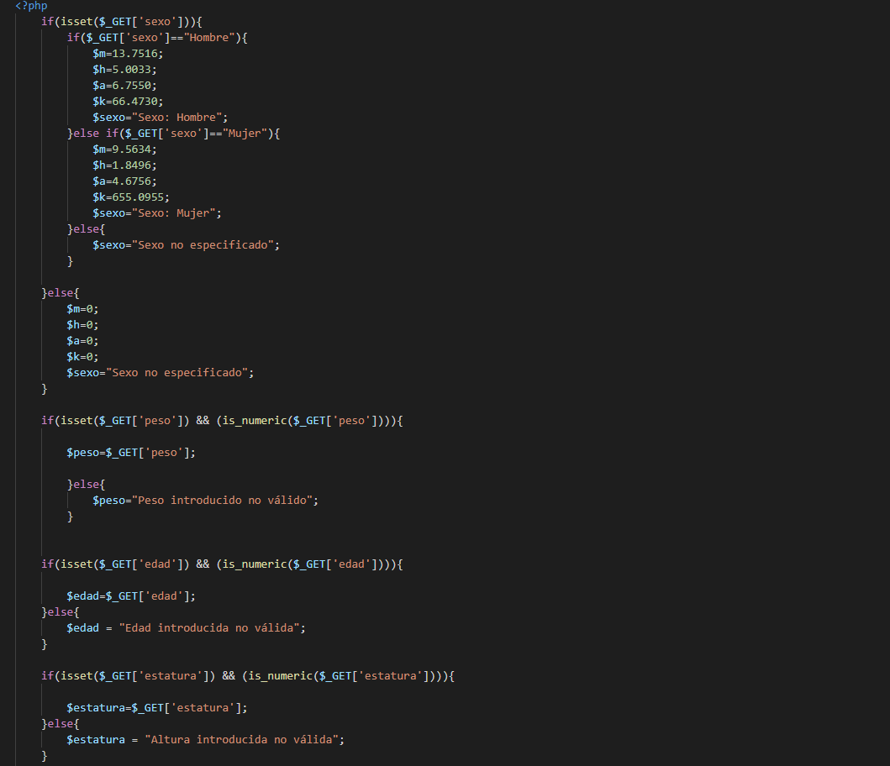
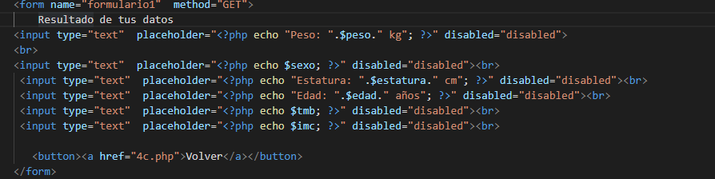

Nos vamos a la página de Apache Friends y elegimos la opción XAMPP para Windows
Esperamos a que termine la descarga
Ejecutamos el instalador descargado
Aceptamos y le damos a continuar en todas las ventanas que nos aparecen
Hacemos click en finalizar
Abrimos Xampp, pulsamos sobre el botón Start situado junto a la opción Apache. Abrimos nuestro navegador favorito y escribimos en la barra de direcciones localhost
y nos llevará a la página de inicio de nuestro servidor.
Hemos utilizado para este tutorial un distribución Debian.Nos vamos a la página de Apache Friends y elegimos la opción XAMPP para Linux
Esperamos a que termine la descarga y abrimos una terminal. Nos vamos al directorio donde lo hemos descargado y listamos su contenido, y ya nos aparece el paquete descargado
Otorgamos permisos de ejecución al archivo descargado. Para ello, debemos ejecutar el comando con privilegos sudo
También con privilegios sudo, ejecutamos el archivo descargado
Tras la instalación, ejecutamos el comando sudo /opt/lampp/apache start Ya podemos irnos a nuestro navegador favorito, escribir localhost y llegaremos a la página principal de nuestro servidor
El PHP puro es la lógico del programa, el que realiza una serie de operación en función de unos parámetros recibidos. Se escribe entre las etiquetas /".
El PHP embebido es el que se usa para escribir HTML trás la realización de una serie de operaciones, para ello, se escriben las etiquetas de apertura y cierre de lenguaje PHP y se escribe llamando a la función,variable, método... con la palabra reservada echo.
